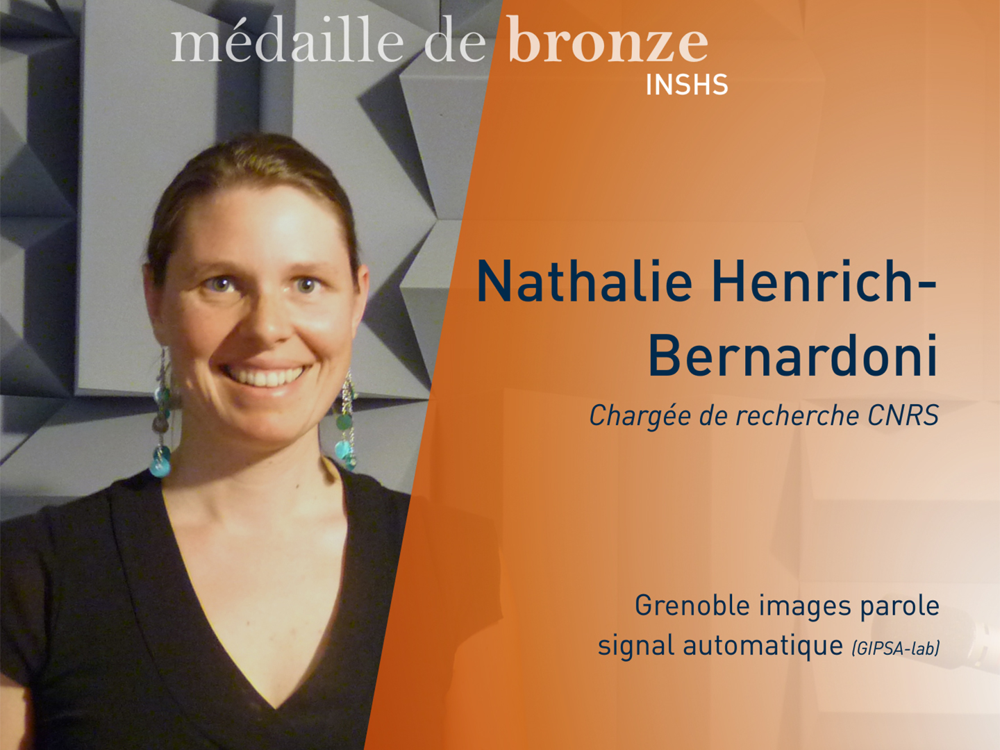
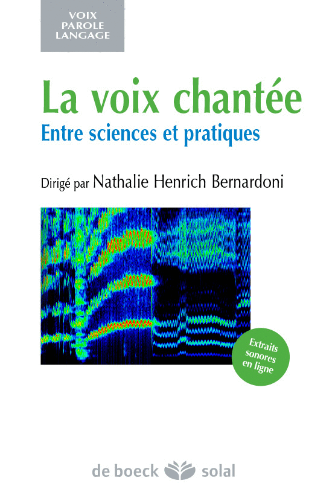
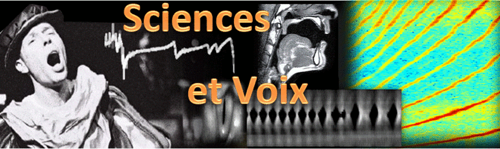
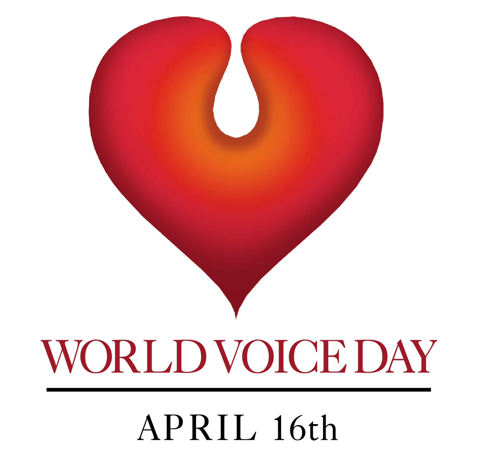

Quand notre voix s'exprime ...
La voix est au cœur des interactions sociales humaines.
 Elle
est parole, murmure, chant, cri et chuchotement. Elle s’exprime, et
elle exprime. Elle reflète nos émotions, nos humeurs, notre
personnalité. Outil de travail pour un tiers des actifs, elle est aussi
un instrument de musique unique et offert à tous, transportable et
modulable. De quoi notre voix est-elle capable ?
Elle
est parole, murmure, chant, cri et chuchotement. Elle s’exprime, et
elle exprime. Elle reflète nos émotions, nos humeurs, notre
personnalité. Outil de travail pour un tiers des actifs, elle est aussi
un instrument de musique unique et offert à tous, transportable et
modulable. De quoi notre voix est-elle capable ?Venez le découvrir à travers la conférence "Quand notre voix s'exprime ..." donnée à l'occasion des Mardis de l'Espace des sciences à Rennes.
Chercheur en Sciences de la Voix ?
 Vous vous questionnez sur le métier de chercheur, sur ce que nous étudions sur la voix humaine ? Voici une vidéo faite à l'occasion de la remise de Médaille de bronze du CNRS en Octobre 2013. Elle vous donnera un aperçu de mes recherches

.Découvrez la Voix Chantée, entre sciences et pratiques !
Un ouvrage collectif vient de paraître chez De Boeck sur le thème de la voix chantée, dans la collection Solal "Voix Parole Langage". Des scientifiques de disciplines variées, un médecin ORL phoniatre, un physiologiste et orthophoniste, des professeurs de chant partagent leurs connaissances et leurs points de vue sur notre instrument de musique et de communication.
Actualités sur les Sciences de la Voix en France
- Rendez-vous sur le carnet
de recherche "Sciences et Voix", animé par la communauté
scientifique sur la Voix en France: http://voix.hypotheses.org
Vous y trouverez les informations actuelles sur les conférences, ateliers, les thèses, mémoires d'orthophonie et stages, des résumés d'articles, et toute autre information en lien avec les Sciences de la Voix.
- Les Atelier Sciences et Voix (ASV) ont lieu tous les mois sur GIPSA-lab. Pour connaître la programmation, consultez la page de l'Atelier Sciences et Voix
- La Journée Mondiale de la Voix a lieu le 16 Avril. Retrouvez les événements en lien avec cette journée sur http://journee-mondiale-voix.fr
Qui suis-je ?
Je suis Directrice de Recherche au CNRS, rattachée à
l'Institut des Sciences Humaines et Sociales du CNRS (INSHS
- CNRS).
Mes recherches portent sur la compréhension physiologique et physique
de la voix humaine (parole et chant). Les champs disciplinaires que
j'aborde sont l'acoustique, l'aérodynamique et l'aéroacoustique de la
production vocale humaine, le traitement des signaux vocaux humains, la
phonétique acoustique et clinique, la voix chantée.
En particulier, mes travaux portent sur l'analyse acoustique et
électroglottographique de la voix parlée et chantée, la
modélisation du débit glottique et les techniques de filtrage inverse,
l'estimation spectrale et l'évaluation perceptive des paramètres de
source glottique, les interactions source-filtre, et la voix chantée
comme aide à l'apprentissage d'une langue étrangère.
Curriculum Vitae
Née le 22 Juin 1974 à Strasbourg (France)
Nationalité française, mariée, trois enfants
Formation:
- Normalienne (ENS Cachan, Dpt. Physique
Fondamentale, 1994-98),
- Agrégée de Sciences Physiques (1997),
- Magistère de Physique Fondamentale (ENS Cachan
et Université
d’Orsay, 1998),
- Thèse de doctorat en Acoustique Musicale
(Université Paris 6, 2001).
Position actuelle:
- Directrice de Recherche 2nde classe au CNRS, INstitut des Sciences Humaines et Sociales, section Sciences du Langage
- Directrice du Département Parole et Cognition de GIPSA-lab
Affiliation:
- Département Parole et Cognition (ex ICP), GIPSA-lab (Grenoble Image Parole Signal Automatique), Grenoble, France
Compétences
et
centres d’intérêt:
- physiologie et physique de la production vocale humaine
- traitement des signaux vocaux humains
- phonétique acoustique et clinique
- voix chantée
Distinctions:
- Médaille de Bronze 2013 du CNRS
Adhésion à des Sociétés Savantes et associations :
- Société Française d’Acoustique (SFA)
- Société Européenne d’Acoustique (EAA)
- Société Française de Phoniatrie et des pathologies de la communication (SFP&Co)
- Société Française d’Ethnomusicologie (SFE)
- Association internationaleCollegium Medicorum Theatri (CoMET)
- Association Française des Professeurs de Chant (AFPC)
- Association Francophone de
la Communication Parlée (AFCP)
Membre de comités et d’instances scientifiques :
- Déléguée remplaçante du comité de direction de l’action européenne COST 2103 Advanced Voice Function Assessment
- Membre du bureau et responsable
financière du Groupe Spécialisé
d’Acoustique Musicale de la SFA
- Membre du board of directors de la conference internationale biannuelle ICVPB (International Conference on Voice Physiology and Biomechanics)
- Membre de l'Advisory Board de la conférence internationale PEVOC
(Pan-European Voice Conference)
Participation à la vie scientifique internationale:
- Editrice Associée pour la revue Logopedics Phoniatrics Vocology (groupe Taylor&Francis).
Département : Parole et Cognition
Equipes : VSLD (Voix, Systèmes Linguistiques et Dialectologie)
Domaine Universitaire
11 rue des Mathématiques - BP 46
38402 Saint Martin d'Hères cedex
Bureau : B366
Mail :
nathalie.henrich@gipsa-lab.fr
Tel : 33 (0)4
76
57 45 34
Fax : 33 (0)4
76 57 47 10
Grenoble Images Parole Signal Automatique laboratoire
UMR 5216 CNRS - Grenoble INP - Université Grenoble Alpes